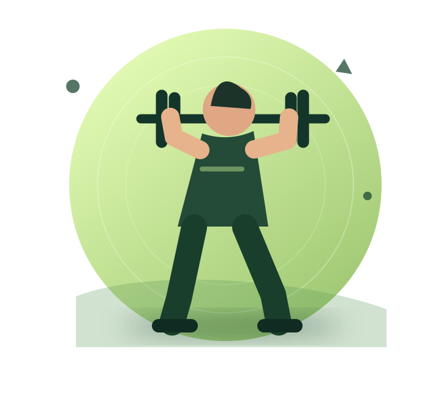

Egyszerű edzéstervezés
Üdvözöl a FitTrack!
Gyakorlatok, edzéstervek és hasznos tanácsok egy helyen.
Edzésterv készítése
Mit találsz az oldalon?
Három lépés a kezdéshez
- Ismerd meg az alapgyakorlatokat.
- Állítsd össze a heti edzéstervedet.
- Végezd el az edzéseket és figyeld a fejlődésed.
Hasznos tanácsok
- Melegíts be minden edzés előtt.
- Fokozatosan növeld a terhelést.
- Hagyj időt a regenerációra.
Gyakori kérdések
Igen, a jQuery könyvtárat is helyben tároljuk, az oldal nem igényel szervert.
Nem, a bemutató csak a böngészőben dolgozza fel az adatokat.